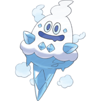
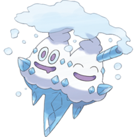

| 이름 | 바닐프티 | 도감 번호 | 582 | ||||
|---|---|---|---|---|---|---|---|
| 타입 | 얼음 | 분류 | 신설포켓몬 | ||||
| 특성 | 아이스바디 눈숨기 |
숨겨진 특성 | 깨어진갑옷 | ||||
| 키 | 0.4m | 몸무게 | 5.7kg | 기초 친밀도 | 70 | 포획률 | 255 |
| 도감 설명 이 포켓몬은 5세대 이전에서 등장하지 않습니다. |
|||||||
| 블랙 | 마이너스 50도의 숨결을 뿜는다. 눈의 결정을 만들어 근처에 눈을 내리게 한다. | ||||||
| 화이트 | 아침 해의 에너지를 쬔 고드름이 포켓몬이 되었다. 눈에 몸을 묻어 잠든다. | ||||||
|
더보기... |
|||||||
| 소드 | 더운 곳에서는 살 수 없다. 냉기를 뿜어 눈을 내리게 한 뒤 쌓인 눈 속에 들어가 잠든다. | ||||||
| 실드 | 고드름에서 태어났다고 전해진다. 마이너스 50도의 냉기를 뿜어 주변을 얼려 살기 좋게 만든다. | ||||||
진화 전 |
Lv. 35 → |
 첫 번째 진화 바닐리치 |
Lv. 47 → |
 두 번째 진화 배바닐라 |
|||